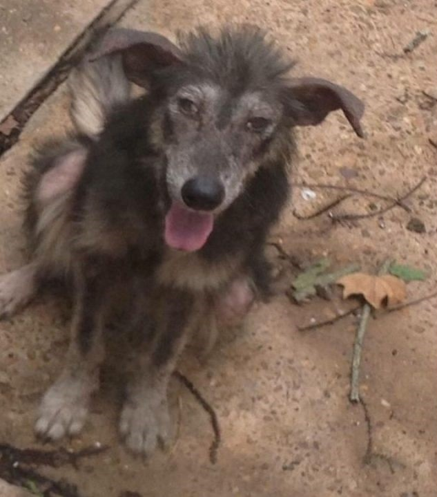
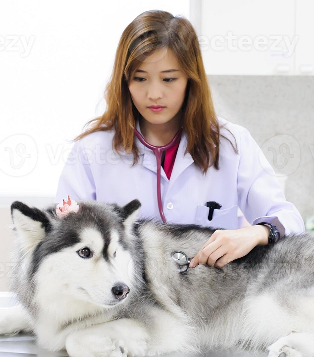
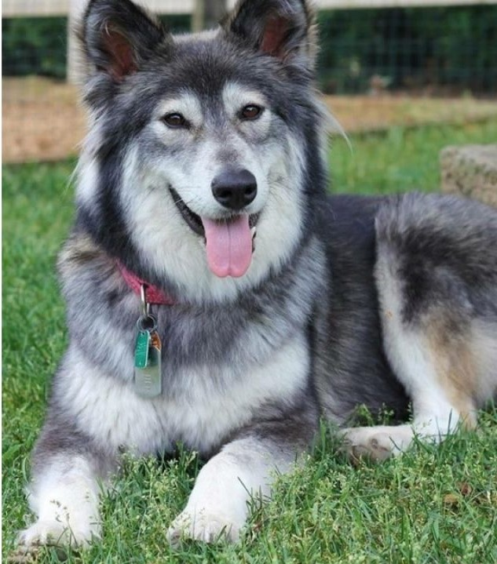

Protectora de animales "Huellitas" nace el 27 de marzo de 2015 con la clara misión de proteger a aquellos perros y gatos que, en situación de calle, lo necesitaran. Su sede principal está ubicada en Martinez Trueba 1012, esquina San Salvador, y cuenta con más de 30 gatos y 40 perros. Cada vez que uno de nuestros voluntarios reporta un animal abandonado, un equipo se dirige a la ubicación, constata la situación y lo rescata.
Todos los animales que ingresan a nuestro refugio pasan una revisión completa de salud, se verifica si fueron castrados, vacunados y desparasitados. Contamos con veterinarios que nos ayudan a entender cuáles son los cuidados que cada animal requiere. Nos aseguramos de que cada mascota tenga su propia cama, que el alimento sea de buena calidad y que nunca estén solos. El trabajo de nuestros voluntarios es esencial a diario.
Cuando el animal está en condiciones de ser adoptado, comenzamos a publicar sus fotos en redes sociales, para que los interesados puedan enviarnos una solicitud. El animal es vacunado, castrado y desparasitado. El adoptante debe firmar un contrato en el que se compromete a brindar ración de calidad, afiliación veterinaria, vacunas y desparasitaciones, además de una casa que permita que el animal viva tranquilo y con su espacio.
